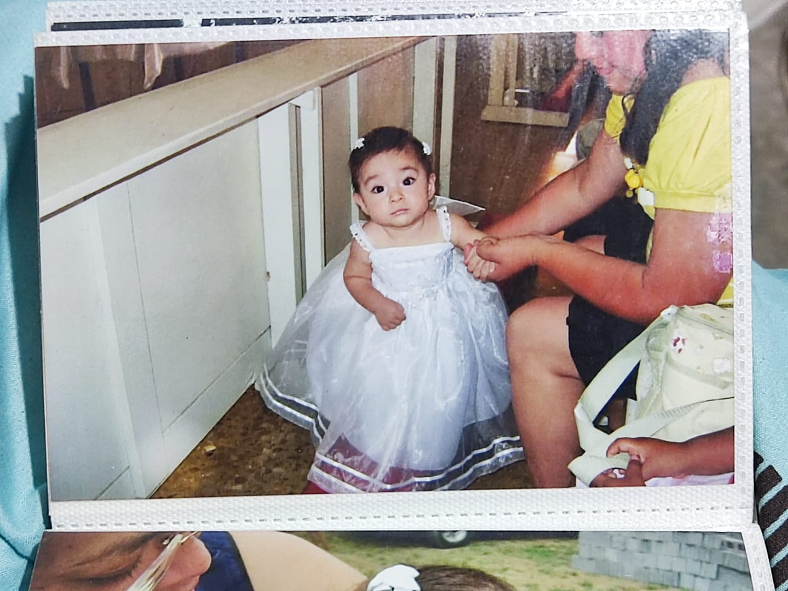
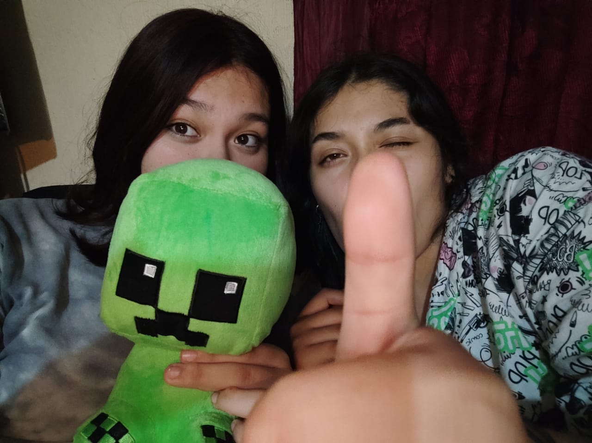
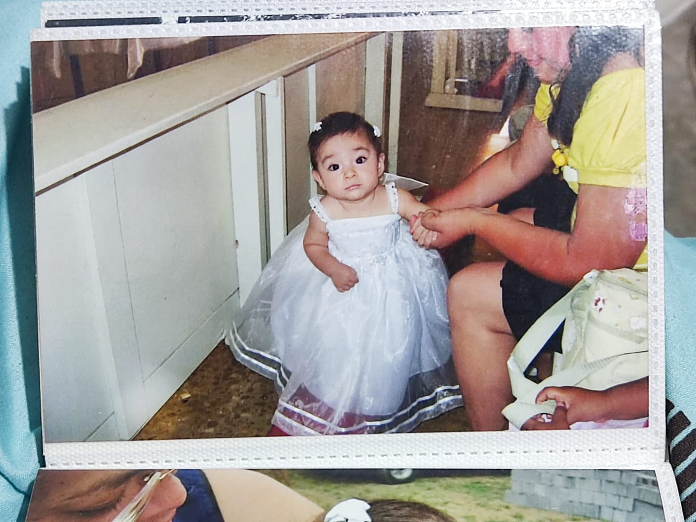
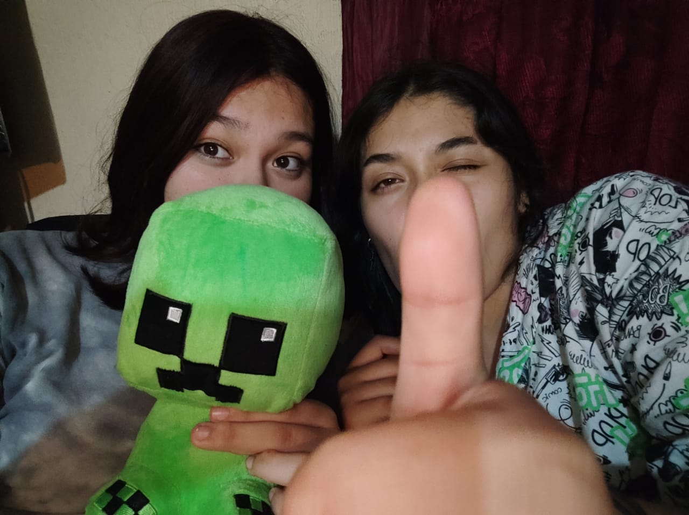

Autobiografia
Me llamo Valery Jazmín Reyes González nací un 17 de septiembre del 2007 a la 1 de la tarde en Monterrey Nuevo León mis padres se llaman María Teresa González Torres y Antonio Reyes Aguilera tengo dos hermanos de la cual yo soy la del medio, mi hermana una mayor que se llama Sofía Abigail Reyes González y mi hermano menor José Antonio Reyes González, curse el kinder en "prof Roger pompa" dónde me pasaron sucesos de los cuales no me acuerdo pero de los que mi mamá me cuenta como por ejemplo cuando concurse para reina de la primavera o que en los bailables solo me quedaba parada y no me movía pero he visto fotos donde en un bailable salgo bailando vestida de zombie después pase a la primaria en la cual solo estuve medio año en primero de esa escuela noe acuerdo mucho solo recuerdo que al final de las clases antes de salir nos leían cuentos, después me cambiaron de escuela a la primaria "Francisco villa" dónde pase el resto de lo que me quedaba como en 3 o 4 de primaria me abrí la cabeza con el soporte del aire lavado y mis amigas de ese entonces me llevaron a la dirección y solo recuerdo que me tapaba la cabeza y que la sangre solo me escurría después llegó mi mamá y me llevo a consultar para irnos a la casa pase a la secundaria "Num.5 Forum universal de las culturas 2007" en dónde no conocía a nadie y casi no hice amigos después nos mandaron a clases en línea en dónde fui más cercana a mi hermana ya que convivíamos la mayor parte del tiempo, al regresar de pandemia nos preparamos para la graduación y ya no volví a ver a mis compañeros, posteriormente entre al Conalep "Don Victor Gómez Garza" en el cual estoy actualmente, desde primer semestre Marlen me acoso y no me soltó de su vida porque un día se me acercó y me preguntó que si quería salir con ella al descanso y le dije que si ese día me contó toda su vida y no podía callarla pero conectamos muy bien después de eso nos volvimos amigas, a finales de 4to semestre conocí a mi pareja todo por un equipo de voleibol que se estaba haciendo en ese momento, empezamos a hablar por un grupo que se había hecho y luego yo le mandé mensaje por privado y ahí empezamos a hablar más y más, al inicio tenía miedo de que empezarán a surgir sentimientos hacia ella pero no quería dejar de hablarle y poco a poco empeze a desarrollar sentimientos hacia ella los cuales ya había tenido desde hace tiempo porque un día la había visto y me llamó la atención y desde ese día ya no la dejé de ver, pero si, empezamos a hablar cada vez más y con mayor frecuencia que ya hasta mis hermanos sabían de ella al regresar a clases pero a mí me cambiaron a la mañana y ella siguió en la tarde, despues nos empezamos a hablar mas y mas hasta que el 9 de septiembre del 2024 nos hicimos pareja oficialente, cosa de la cual no me arrepiento por que estoy muy segura de que es el amor de mi vida y la persona con la que quiero pasar el resto de mi vida, sin importar que pase siempre la seguire amando, en general mi vida ha sido muy tranquila sin escandalos y ese tipo de cosas, tengo una familia que me quiere y respeta y eso no lo cambiaria por nada del mundo.
 


